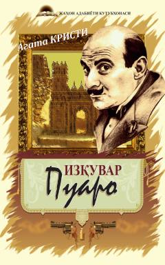

PAgata Kristining Puaro va Miss Marpl ishtirokidagi detektiv hikoyalari to'plami.
Bu to'plam mashhur ingliz yozuvchisi Agata Kristining qiziqarli detektiv hikoyalarini o'z ichiga oladi. Hikoyalarda aqlli va kuzatuvchan qahramonlar — Puaro va Miss Marpl — murakkab jinoyatlarni hal qiladi. Kitob Iззат Ahmedov tomonidan rus tilidan o'zbek tiliga tarjima qilingan.